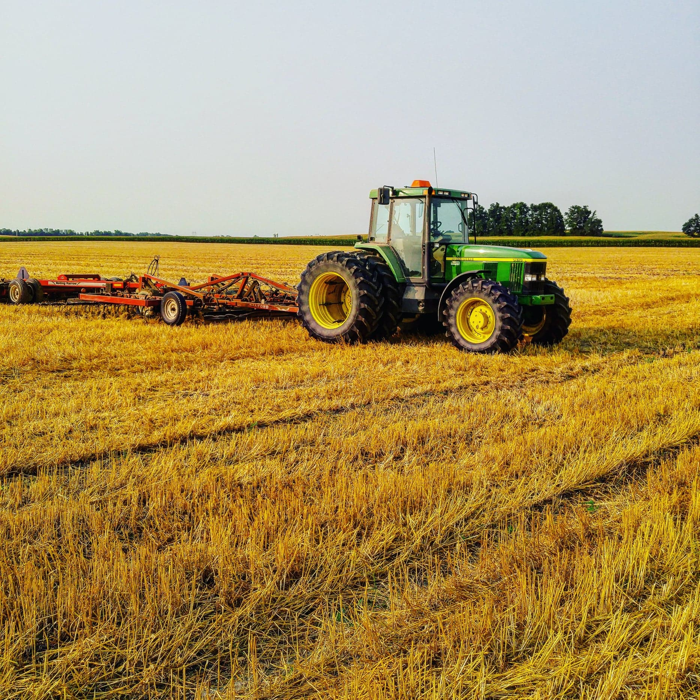

Welcome
My name is Taylor Stanley Ross Young, I am 23 and a student at the University of Ottawa in the Digital Journalism program.
I have made websites before, but they were created from templates which I then modified using HTML and CSS. While I have played around on my own time with making websites from scratch, using notepad, I have never made live any of my work.
My hobbies include reading, writing, listening to music, playing video games with my friends, and playing the bagpipes.
My Background
I grew up in a small town roughly an hour east from Ottawa. Much of the county was built up of farms and farmland, which made it easy to find summer jobs after a long school year. Since I was young, I've spent nearly every summer driving tractors, making hay, and taking care of livestock. It wasn't until I went away to school at Algonquin that I was able to get a job during the summer in anything other than farming.
During the summer of 2019 I managed to get a job with my local newspaper, The Glengarry news. There I was given the opportunity to put all my journalistic training to the test. I believe I did quite a good job as I was complimented many times by readers throughout the community. I was even offered a full-time job by the publication, provided I quit school. I politely declined the offer as progressing my education and gaining more credentials aligned more with my career plan. I also realized early on in the employment that, while it is important, small community newspapers are not the type of news I want to be in. I want to be doing something that has a bit of unpredictability and excitement; which can be tough to find when you report on the same events every year.